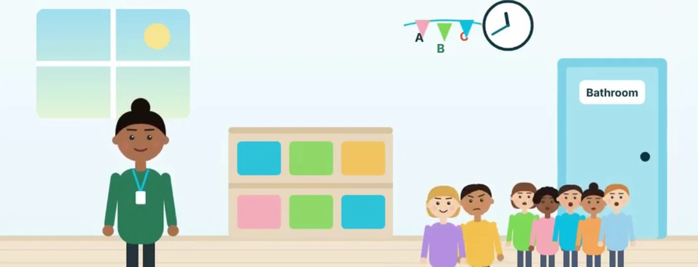

ECEC behaviour guidance and family partnerships
Self-initiatedBehind the Behaviour
A Rise-style course that teaches new educators and graduate teachers to read behaviour as communication, find the need underneath it and partner with families without blame, with three animated AI scenarios and a capstone that follows one child for a month.
WalkthroughJob aidCourse